This file gives an overview of the finite element module of Galeri.
An alternative way to produce example matrices is to define a finite element problem. The Galeri package contains (in the Galeri::FiniteElement namespace) a set of classes that can be used to discretize scalar, second-order, symmetric and non-symmetric PDEs of type
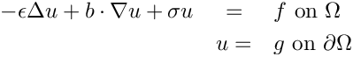
Neumann boundary conditions can be imposed with minimal changes to the code. The computational domain 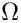 must be a 2D or a 3D domain, discretized using triangles, quadrilaterals, tetrahedra or hexahedra. The code can be quite easily extended to tackle vector problems, using the same finite element space for all unknowns. Functions are provided to compute norms and to visualize the results.
The Galeri finite element code is based on a set of abstract classes:
Galeri::FiniteElements::AbstractGrid defines the query methods that each grid class must implement. AbstractGrid is based on the getrow() concept: instead of prescribing a given format, the user must define a set of methods, that will be used by the code to query for the vertices in a local elements, the coordinates of each vertex, the boundary faces, and so on. The actual data storage becomes inessential.
Galeri::FiniteElements::AbstractVariational defines a set of abstract interfaces for the variational form. An implementation of this class constructs the elemental finite element matrix and the right-hand side.
Galeri::FiniteElements::AbstractProblem takes an AbstractGrid, an AbstractVariational, and an AbstractQuadrature in input, then builds the global finite element matrix, and imposes the boundary conditions as specified by the user. It can also compute the norm of the numerical solution, exact solution, and error, using H1, semi-H1 or L2 norms.
AdvDiffSquare: Creates a matrix corresponding to the finite element discretization of the advection-diffusion problem
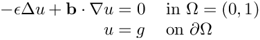
where 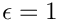, 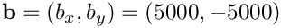, and 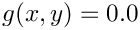 if 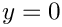 and 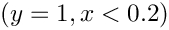. The unstructured grid is obtained with MATLAB, and it is composed by triangles. The grid is composed by 5248 triangles, 2705 nodes, and 160 boundary faces, and can be found in file "galeri/data/Square.grid". The solution looks like:
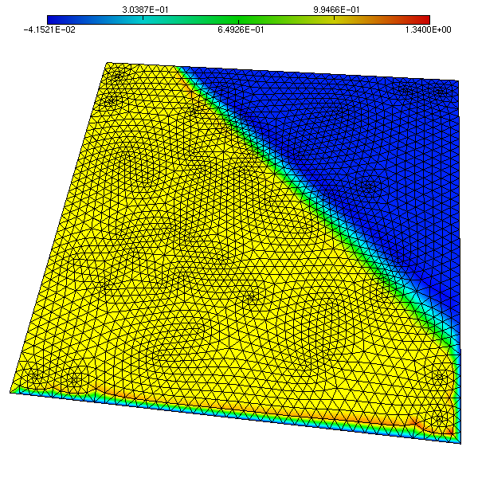
LaplaceCircle: Creates a matrix corresponding to the finite element discretization of the Laplace problem
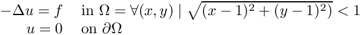
The unstructured grid is obtained with MATLAB, and it is composed by triangles. The grid is composed by 4128 triangles, 2129 nodes, and can be found in file "galeri/data/Circle.grid". The solution looks like:
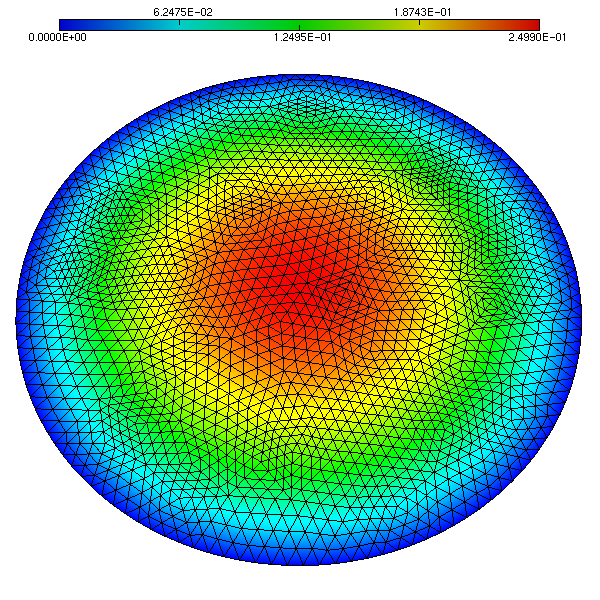
LaplaceSquare: Creates a matrix corresponding to the finite element discretization of the Laplace problem
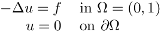
The unstructured grid is obtained with MATLAB, and it is composed by triangles. The grid is composed by 5248 triangles, 2705 nodes, and 160 boundary faces, and can be found in file "galeri/data/Square.grid". The solution looks like:
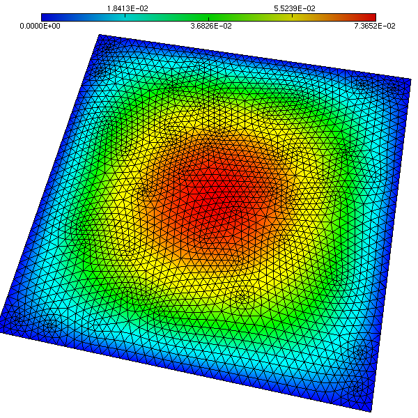
LaplaceSquareInSquare: Creates a matrix corresponding to the finite element discretization of the Laplace problem
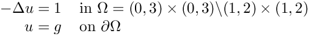
and 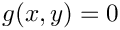 on the exterior square, and 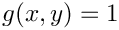 on the interior square. The unstructured grid is obtained with MATLAB, and it is composed by triangles. The tag of the external boundary is 0, while the one of the internal boundary is 1. The grid is composed by 4800 triangles, 2516 nodes, and 232 boundary faces, and can be found in file "galeri/data/SquareInSquare.grid". The solution looks like:
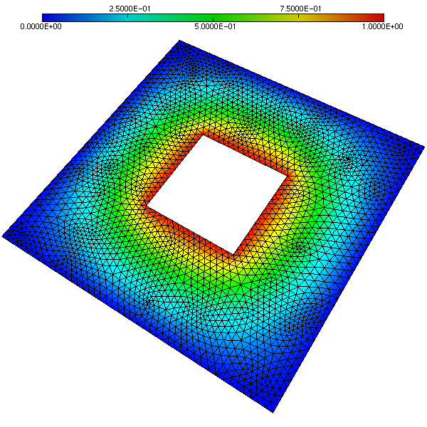
Generated on Thu Oct 9 2025 20:37:58 for Galeri by 1.9.8